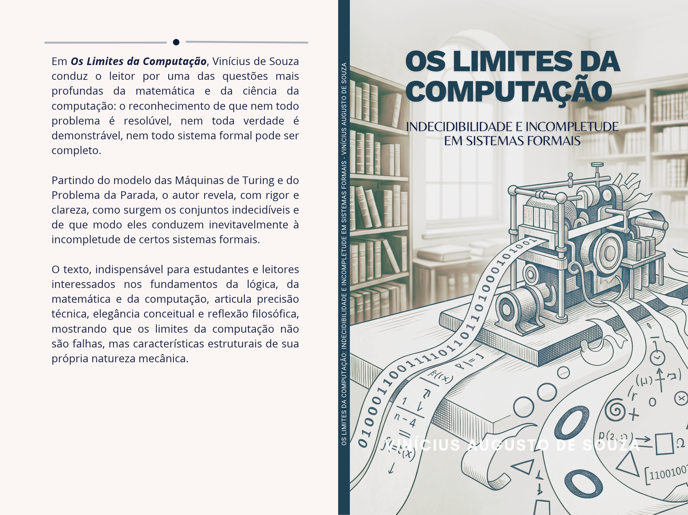

Livro · 2026
Os limites da computação
Indecidibilidade e incompletude em sistemas formais.

ISBN nº 978-65-01-99171-9.
Sobre a obra
Em "Os Limites Lógicos da Computação", Vinícius de Souza conduz o leitor por uma das questões mais profundas da matemática e da ciência da computação: o reconhecimento de que nem todo problema é resolúvel, nem toda verdade é demonstrável, nem todo sistema formal pode ser completo. Partindo do modelo das Máquinas de Turing e do Problema da Parada, o autor revela, com rigor e clareza, como surgem os conjuntos indecidíveis e de que modo eles conduzem inevitavelmente à incompletude de certos sistemas formais. O texto, indispensável para estudantes e leitores interessados nos fundamentos da lógica, da matemática e da computação, articula precisão técnica, elegância conceitual e reflexão filosófica, mostrando que os limites da computação não são falhas, mas características estruturais de sua própria natureza mecânica.
Detalhes
Autor: Vinicius Augusto de Souza
Publicação: 2026
Formato: impresso